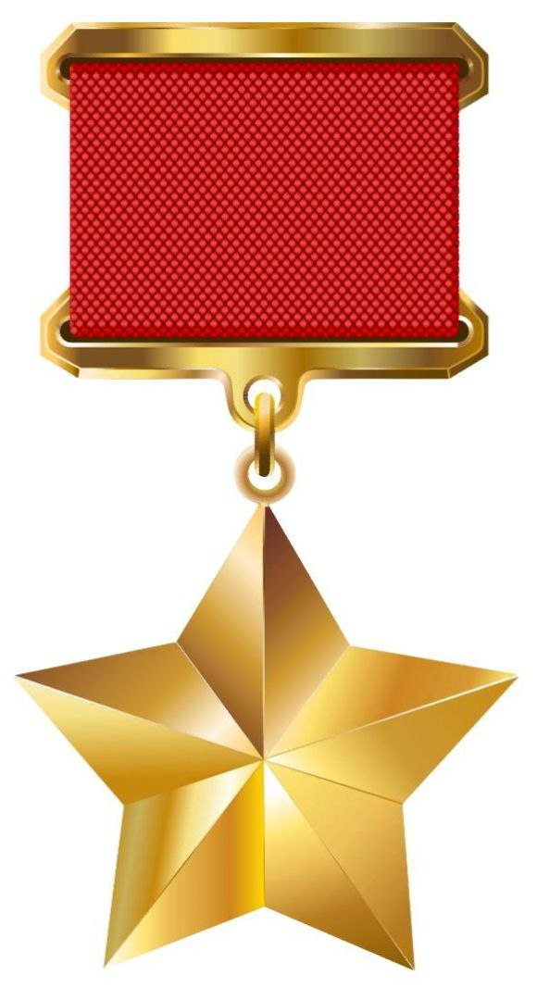

Борис Иванович КовзанЛегендарный летчик-истребитель |
|||||||||||||||||||||
Разделы:
|
Награды и звания За мужество и героизм, проявленные в боях с немецко-фашистскими захватчиками, капитану Борису Ивановичу Ковзану Указом Президиума Верховного Совета СССР от 24 августа 1943 года было присвоено звание Героя Советского Союза с вручением ордена Ленина и медали "Золотая Звезда" (№ 1104). Борис Ковзан был удостоен следующих государственных наград:
Также он был награжден различными медалями, среди которых:
Эти награды являются свидетельством его выдающегося вклада в победу и признанием его личного мужества и отваги. |
||||||||||||||||||||